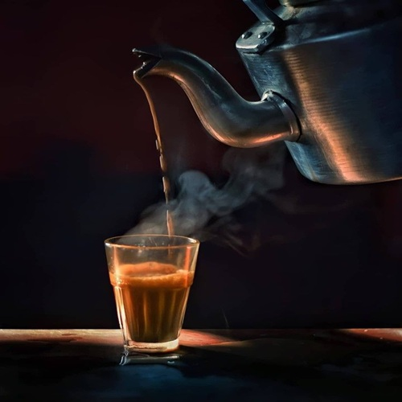
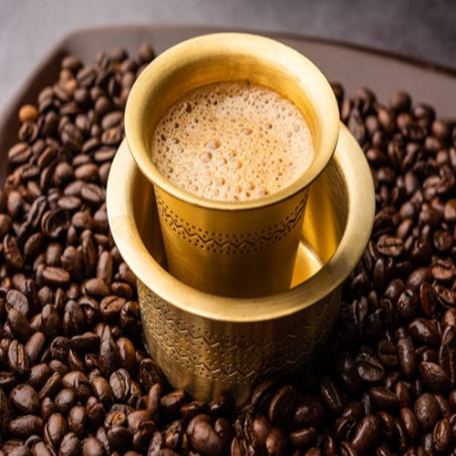
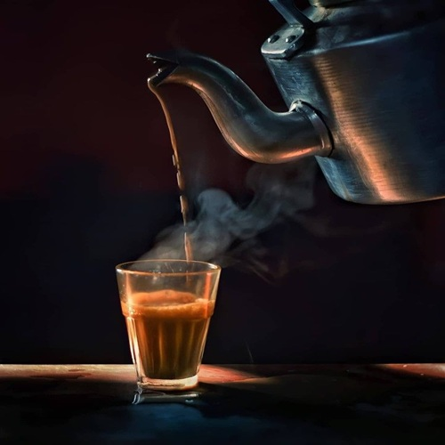
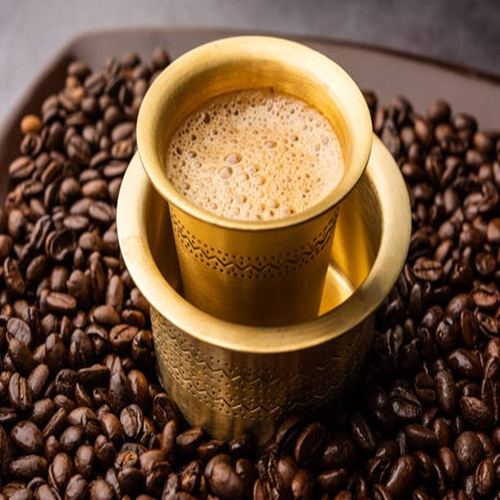

Chai
Chai is made by boiling tea leaves with milk, water, and spices. It is a daily drink in South India.
Filter Coffee
South Indian filter coffee is strong, aromatic, and made using a traditional metal filter.
Chai is made by boiling tea leaves with milk, water, and spices. It is a daily drink in South India.
South Indian filter coffee is strong, aromatic, and made using a traditional metal filter.
Source link for Chai: Click here to view Chai Image
Source link for Coffee: Click here to view Coffee Image